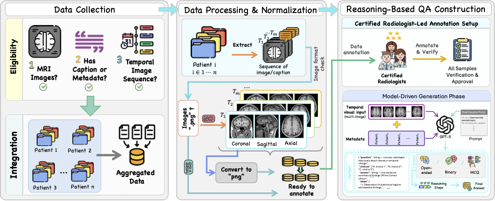

Temporal Reasoning
Interpret interval changes across sequential scans, planes, and contrasts.

Benchmark construction pipeline. Longitudinal MRI cohorts are harmonized through multi-view extraction and preprocessing, followed by expert-guided QA generation and radiologist verification.
Real-world radiology is comparative and longitudinal: radiologists assess disease progression by aligning current and prior scans across multiple anatomical views and sequences. Our benchmark evaluates this capability across five complementary tasks and seven longitudinal MRI cohorts.
Temporal Reasoning · Disease Progression · Structured Localization Guidance · Temporal Sequence Ordering · Change Localization Over Time

Comparison with existing MRI benchmarks. Time-Aware MRI provides full coverage across all five reasoning dimensions.
Interpret interval changes across sequential scans, planes, and contrasts.
Characterize growth, regression, or stability over time.
Identify changed anatomy, boundaries, features, and confounders.
Arrange scans chronologically from visible progression patterns.
Identify the timepoint and spatial region showing maximal change.

Representative longitudinal MRI reasoning samples across metastatic lesions, glioblastoma, and neurodegenerative progression.
Across 16 vision-language models, current systems achieve moderate temporal alignment but show persistent limitations in change characterization and volumetric reasoning. InternVL3.5-Inst leads the benchmark on TAC (0.800) and final accuracy (35.15%).
Source MRI images are not redistributed through this project page or repository. We release benchmark annotations, sample identifiers, evaluation splits, prompts, preprocessing code, and evaluation scripts so researchers can reconstruct the benchmark after obtaining the source datasets from their official providers.
@inproceedings{alghallabi2026timeaware,
title={How Good are Foundation Models in Longitudinal MRI Disease Progression Reasoning?},
author={Al Ghallabi, Wafa and Thawkar, Ritesh and Ghaboura, Sara and Thawakar, Omkar and Saeed, Numan and Al Nuaimi, Dana and Alkatheeri, Ajnas and Khan, Salman and Khan, Fahad Shahbaz},
booktitle={Medical Image Computing and Computer Assisted Intervention -- MICCAI 2026},
year={2026}
}